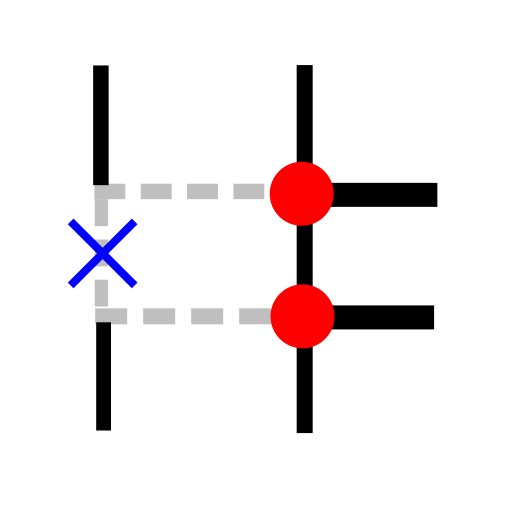
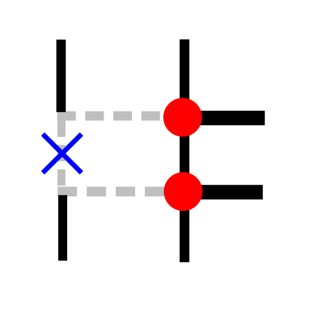
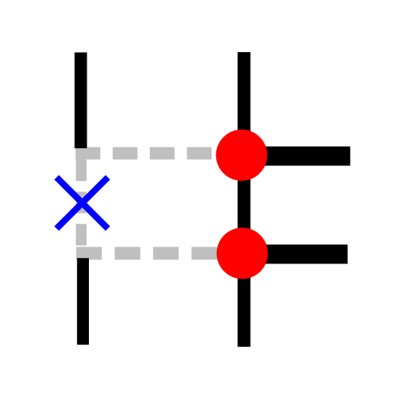
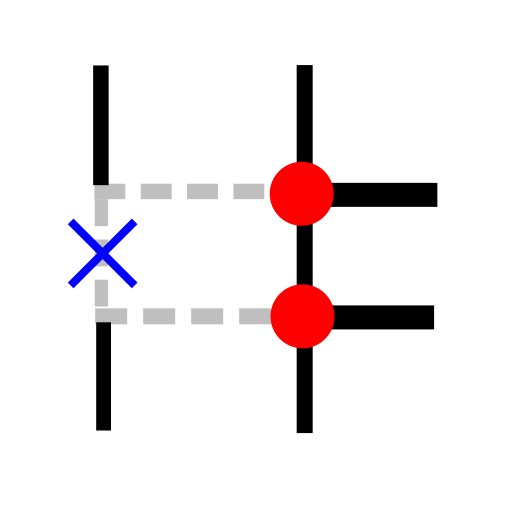
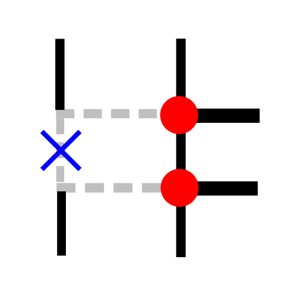

Ročno lomljenje
Toolbar / Icon:

Menu:
Uredi - Ročno lomljenje
Shortcut:
B, 2
Commands:
brk | b2
Description:
Razdeli objekte tako, da izbriše segment, ki se nahaja med dvema izbranima točkama.
 


